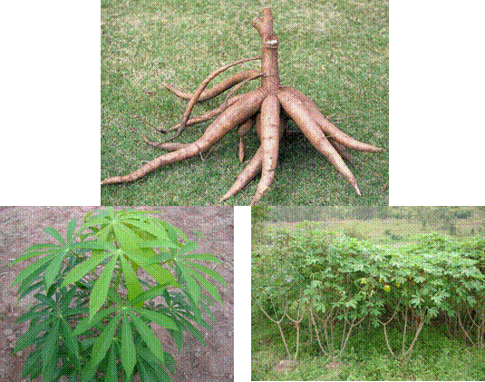

HORT 281 :: Lecture 24 :: ORIGIN, AREA, PRODUCTION, VARIETIES, PACKAGE OF PRACTICES FOR TAPIOCA

Origin, area, production, varieties, package of practices for TAPIOCA
Cassava: (Syn: Tapioca) Manihot esculenta (Crantz)
(2n = 2x = 36)
(Hindi: Mravuli)
Family: Euphorbiaceae
Cassava is the most important starchy root crop grown in the tropics and is mainly cultivated in southern peninsular India. Introduced during seventeenth century by Portuguese, the crop played a significant role to overcome food shortage among the low income group of people in Kerala. Underground tuber is rich in starch and mainly consumed after cooking. Processed products like chips, sago and vermicelli made of tapioca are also popular in the country. Being easily digestible, it forms an important ingredient in poultry and cattle-feeds. It is also widely used for production of industrial alcohol, starch and glucose.
Origin and distribution
Cassava is not known in wild state. North-Eastern Brazil is the centre of origin. Portuguese distributed the crop from Brazil to countries like Indonesia, Singapore, Malaysia and India.
Nigeria is the major growing country in world accounting for 50% of area and production. In India crop is cultivated in southern peninsular region, particularly Kerala, Tamil Nadu and Andhra Pradesh contributing 93% of area and 98% of production in the country. Kerala accounts for nearly 50% of total area under cassava in India and is mainly grown as rainfed crop.
Botany
Cassava belongs to family Euphorbiaceae and is diploid (2n=36). Polyploids with 2n=54 and 72 are also available. It is a perennial shrub producing 5-10 cylindrical tubers per plant. Being a member of family Euphorbiaceae, it produces latex. The stem is woody and variously branched. Two distinct types are present – one without branching at the top and the other with spreading nature. Leaves are palmately lobed with 5-9 lobes. Cassava is monoecious in nature and cross-pollinated. Female flowers are a few in numbers and are borne in the base of inflorescence and male flowers are borne above. Female flowers open about 10 days before male flower anthesis. Stigma is receptive from 6.30 a.m. and continues up to 2.30 p.m.
Plants when raised from seeds produce typical tap root system. Since crop is mainly propagated by vegetative means by stem cuttings, numerous adventitious roots develop, of which a few develop into tubers. Tubers are composed of a thin peridium, white a few develop into tubers. Tubers are composed of a thin peridium, white or purple cortex known as rind and central massive flesh rich in starch (25-40%). Bitterness often encountered in a few varieties and at certain stage is due to a bitter principle cyanogenic glucoside (HCN).

Varieties
Varieties differ in colour of rind and flesh, size of tubers, colour of stem, leaf and petiole, branching pattern, duration of crop and resistance to mosaic disease. High amount of cross-pollination results in heterozygous nature. Vegetative method of propagation resulted in development of a number of polyploidy varieties and hybrids. Most of the crop improvement works on cassava are done at the Central Tuber Crops Research Institute (CTCRI), Thiruvananthapuram. Important varieties developed at CTCRI are given below:
H-97: This erect branching hybrid, developed by crossing Manjavella Local with a Brazilian Local, is characterized by the light sepia colour of emerging leaf with brown tubers; yield 25-35 t/ha in 10 months.
H-165:This is a non-branching hybrid with mature leaves showing drooping nature; tubers are relatively short with cream coloured rind; yield 33-38 t/ha in 8-9 months.
H-226:This semi-branching hybrid having characteristic green coloured leaves; tuber rind is light purple and skin is cream with purple patches; susceptible to cassava mosaic disease (CMD); yield 30-35 t/ha in 10 months.
Sree Sahya: This is a multiple hybrid involving five parents. It is non-branching with dark brown petiole and spiny prominent stipular mark; tubers are long and rind is cream coloured; yield 35-40t/ha in 10-11 months.
Sree Vaisakham: This is a semi-branching hybrid with slightly yellow fleshed tubers which remains yellow even after cooking; carotene content is 466 IU / 100 g; tuber rind is cream and skin is brown coloured; yield is 35-38 t/ha in 10 months.
Sree Prakash: This is a short, non-branching, early maturing (7-8 months) variety developed by clonal selection; highly tolerant to Cercospora leaf spot; yield 35-40 t/ha in 7-8 months.
Sree Harsha: This is a triploid clone developed by crossing a diploid with an induced tetraploid clone of ‘Sree Sahya’; plants are stout, erect and non-branching with tubers of good cooking quality and high starch content (38-41%); yield 35-40 t/ha in 7-8 months.
Sree Jaya:This is a short-duration (6 months) clonal selection suitable for low land cultivation as a rotation crop in paddy-based inter-cropping system; tubers are with brown skin and purple rind and have good cooking quality; yield 26-30 t/ha; susceptible to CMD.
Sree Vijaya: This is also a short-duration (6-7 months) clonal selection suitable for low land cultivated as a rotation crop in a paddy-based inter-cropping system; tubers are with cream coloured rind and light yellow flesh due to high carotene; susceptible to mite and scale insect; yield 25-28 t/ha in 7 months.
M-4: This is a non-branching variety with excellent cooking quality; susceptible to mites; yield 18-23 t/ha in 10 months.
Sree Rekha:Erect branching variety with excellent cooking quality; susceptible to mites; yield 18-23 t/ha in 10 months.
Sree Prabha: Semi-spreading variety with good taste and quality; yield 35-40 t/ha in 10 months.
Three varieties viz., Nidhi, Kalpaka and Vellayani Hraswa were developed by Kerala Agricultural University.
Nidhi: Yield (25.1 t/ha), tolerant to mosaic, short duration (5-6 months) grayish white stem, petiole white with red shade, skin light pink.
Kalpaka (KMC-1: Yield (28.4 t/ha), short duration (6 months), non branching stem, pink tuber rind.
Vellayani Hraswa:High yield (44.01 t/ha), short duration (5-6 months), pink tuber rind, excellent cooking quality.
Tamil Nadu Agricultural University also developed three varieties viz., CO-1, CO-2 and CO-3.
CO-1: A clonal selection with tubers having whitish brown skin, creamy rind and 35% starch; yield 30 t/ha in 8-9 months.
CO-2: A branching variety with tubers having brown skin, creamy white rind and 34.6% starch; yield 35 t/ha in 8-9 months; suitable for consumption and industry.
CO-3 : A branching variety having tubers with brown skin and 35.6% starch; yield 42.6 t/ha in 8 months.
Co (Tp) 4: Selection from Me501, Yield 50 t/h, Starch 40 %, Field tolerant to Red
Spider mite and scales
CTCRI CO (Tp) 5: Seedling selection, Released during 2007, Yield
Potential 30t/ha, Starch content 26%,Resistant to CMD, Duration 10 months, Suitable to irrigated conditions
Climate
Cassava is a tropical crop tolerant to drought and cannot withstand frost. It is grown in altitudes up to 2000 m, but performance is better in lower altitudes. Though crop can be grown even in semi-arid conditions, growth and productivity are better in warm humid climate with well distributed rainfall.
Soil
Cassava grows on all types of soils, but saline, alkaline and ill-drained soils are not suitable. Crop is mainly grown in laterite soils to loan in Kerala and black and red soils in Tamil Nadu.
Season of planting and preparation of sets
As an irrigated crop, cassava can be planted during any part of year, but December-January planting is better. As a rainfed crop, planting is done during April-May before onset of South-West Monsoon and during September-October coinciding with North East monsoon.
Stem cuttings, usually called as sets, for planting are taken from disease free stakes of 8-10 months maturity having a thickness of 2-3 cm diameter. Discard woody basal portion and tender top portion of stem. Prepare sets of 15-20 cm length with a smooth circular cut at the base and slanting cut at top for easy identification of base and top. The circular cut at base ensures uniform callus formation and root initiation. Sets prepared from stem stored for 15 days with leaves give better sprouting.
Land preparation
Land is ploughed or dug properly for loosening soil to a depth of 20-25 cm. Depending on texture of soil and slope of land, mounds or ridges or raised beds are prepared. Mounds of 25-30 cm height are prepared in poorly drained soils. Ridges of 25-30 cm length are made in sloppy land for a rainfed crop and in leveled for irrigated crop. Ridges are taken across the slope. Flat raised beds are taken in level lands having good drainage. Since cassava mosaic disease is a serious problem, care should be taken to select disease-free stakes for preparation of sets. Raising sets initially in raised beds by planting very close (400 sets / m2), rouging out diseased plants and uprooting disease-free sets for planting at 3 weeks age ensure disease-free seedlings.
Planting
Sets 25 – 30 cm length are planted vertically in beds, mounds or ridges to a depth of 5 cm. Care should be taken to avoid planting of sets inverted. Spacing depends on branching pattern of varieties. Normally erect and non-branching varieties are planted at 75 x 75 cm and branching or semi-branching varieties at 90 x 90 cm. In case, sets are dried after planting, 5% of stakes may be planted as reserve in field, separately at a closer spacing of 4 x 4 cm for gap filling after 20-25 days.
Manures and fertilizers
Cassava is a heavy feeder and crop is to be adequately manured for getting high yield. Apply 125 tonnes of farmyard manure / ha as basal dose. For high yielding varieties, a fertilizer dose of 50 kg N, 50 kg P2O5 and 50 kg K2O / ha is recommended at the time of land preparation. If planting of sets is done during hot condition, basal dose of fertilizers and manures may be postponed to one month after planting. This will avoid attack of termites and drying up of sets. Apply second dose of fertilizer i.e., 50 kg N and 50 kg K2O, 45-50 days after planting along with weeding and earthing up. In short duration varieties, fertilizer dose can be reduced to 75:50:75 kg NPK/ha.
Interculture
Pinching off excess sprouts emerging from sets is necessary in cassava cultivation. This may be done 30-45 days after planting. As sprouts from top buds are more vigorous than those emerging from lower nodes, retain only two sprouts from top portion, that too on opposite sides of set.
Inter-culture operations are aimed at removing weeds in early stages of crop and to improve physical condition of sets for proper tuber development. First inter-culture operation may be done sufficiently deep at 45-60 days after planting and a shallow inter-culture by way of weeding or earthing up may be given one month after the first.
Cassava is grown mainly as a rainfed crop in Kerala and irrigated crop in Tamil Nadu. Irrigating crop at 25% available moisture depletion level, could double tuber yield compared to irrigated crop.
Harvesting and yield
The crop is ready for harvesting in 10-11 months after planting. Short duration varieties can be harvested in 6-7 months. Delayed harvest results in deterioration of quality of tubers. Harvesting is usually done by uprooting plants gently by holding stem. After harvesting, stack stems vertically in well aerated place for use in subsequent planting.
Yield is 25-30 t/ha for short duration varieties and 30-40 t/ha for other varieties.
Intercropping
As cassava is widely spaced, intercropping with short duration crops like ground nut, French bean and bush cowpea will utilize light and water more effectively and give an additional income of Rs.3000-3500/ha within 3-3½ months. It adds organic manure to soil and controls weeds. Intercrops are to be adequately manured for avoiding competition with main crop.
Pests
- Two groups of spider mites occur during dry season from January to May. One group Tetranychus cinnabarinus and T. neocaledonicus feed on under surface of leaves causing elongated streaks, chlorosis and withering of leaves. In severe cases, it covers the upper surface also. The other group Eutetranychus orientalis and Oligonychus biharensis feed on upper surface of leaves causing depletion of chlorophyll, resulting in typical rusted leathery appearance. Curling of leaves starting from margins is also noticed. Water spray at run-off level, spraying neem oil or dimethoate (0.05%) is effective for control of mites.
- Scale insect (Anoidomytllus albus) attack stem when stacked and occasionally in field causing drying. Storing of stem in vertical position and spraying dimethoate (0.05%) will be effective for control of insect.
- Termites (Odontotermes obesus) and white grubs (Leucopholis coneophora) infest roots causing drying up of plants. In severe cases, follow soil application of insecticides.
Diseases
- Cassava Mosaic Disease is the most serious problem of cassava cultivation in Kerala and is caused by Gemini virus. Infested plants show reduction in leaf size and stunted growth, curling and typical mosaic pattern. Though quality is not reduced, yield reduction is considerable. Field sanitation, selection of disease free stem for planting, timely rouging, control of vector (white fly – Bemisia tabaci), growing tolerant varieties like H-97, H-165, Sree Vaisakham and Sree Sathya are recommended for reducing disease incidence.
Tuber rot caused by Phytophthora dreschleri: This is more in ill-drained soils; infected tubers show brown discolouration of internal tissues and become rotten and emit foul smell. Remove infected tubers and apply Trichoderma spp in the soil.
********
1. Tapioca belongs to the __________ family
a. Solanaceae b. Euphorbiaceae c. Convolvaceae d. Composital
2. The average productivity of tapioca in India is ________ t/ha
a. 15 b. 19 c. 22 d. 25
3. __________ is the major country growing cassava
a. Brazil b. Mexico c. India d. Nigeria
4. Native of tapioca is
a. India b. Brazil c. Nigeria d. India
5. Tapioca is _____________ crop
a. Long day b. Short day c. Photo insensitive d. None
| Download this lecture as PDF here |